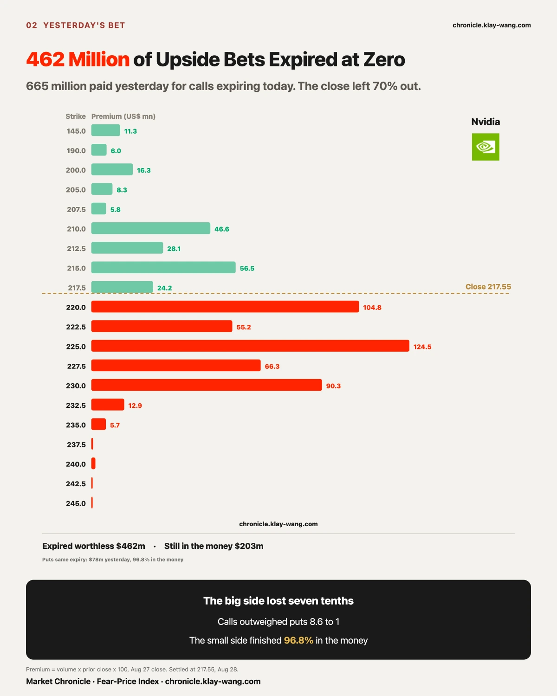
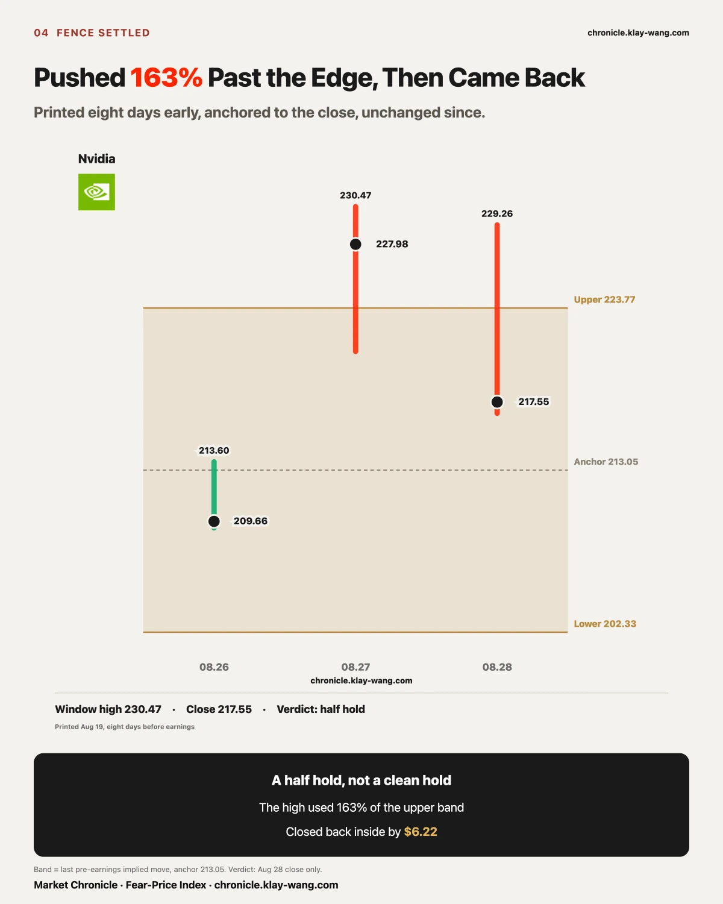
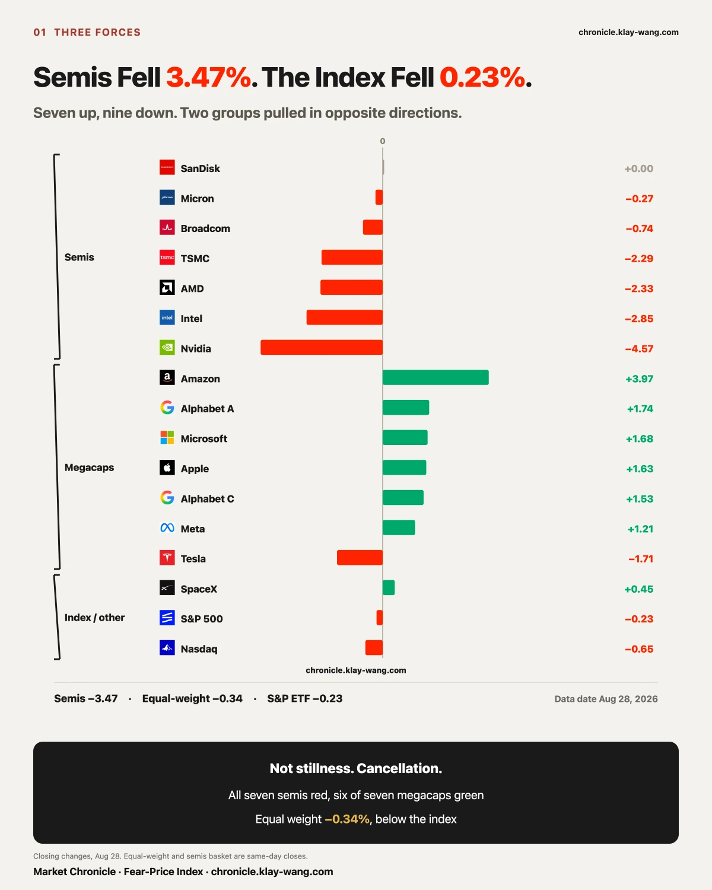
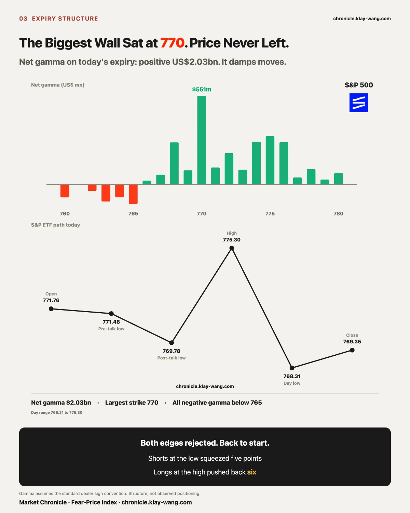
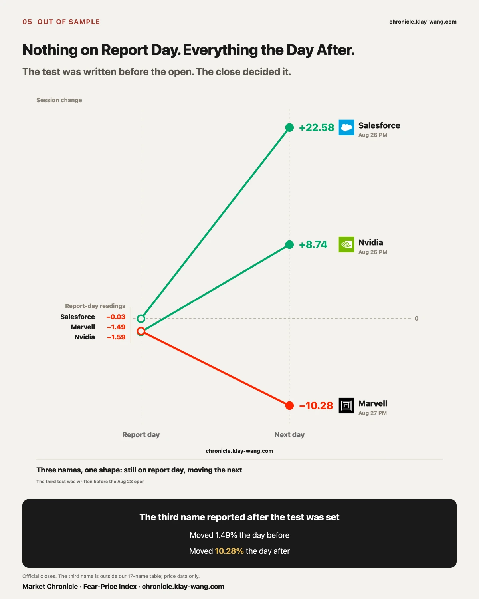
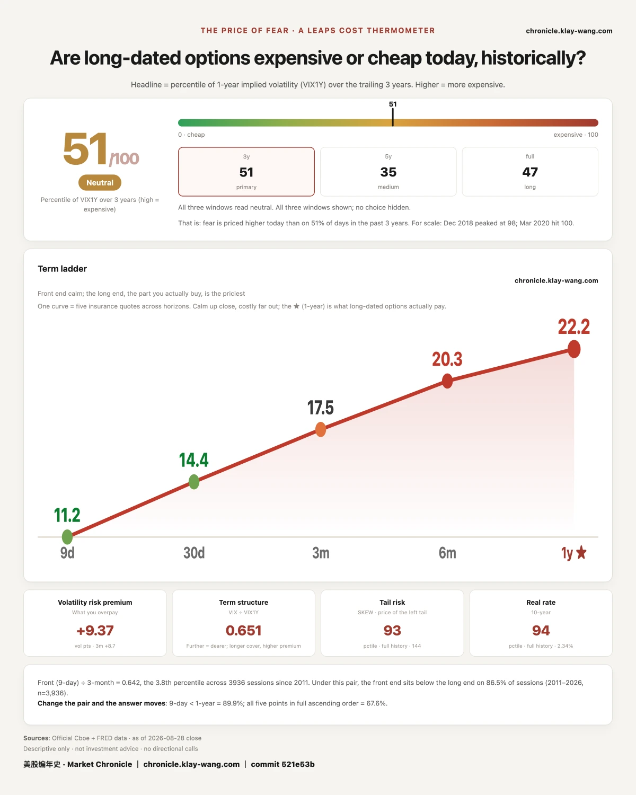

Everything worth saying today grew on the same ticker, so this section takes it apart.
At Thursday's close, Nvidia calls expiring today carried 665.2 million in premium. Today it settled at 217.55.
Struck above that: 462.1 million, 69.5 percent, worth nothing. Struck below and still in the money: 203.1 million.
The dead weight sat right against the price: 124.5 million at the 225, 104.8 million at the 220, 90.3 million at the 230, 66.3 million at the 227.5, 55.2 million at the 222.5. The busiest, the 230, traded 654,046 contracts at 1.38 each.
Puts on the same expiry carried only 77.6 million, and 96.8 percent finished in the money.
Calls outweighed puts 8.6 to 1. The small side was almost entirely right. That money arrived after yesterday's 8.74 percent move, betting it would continue.
Nvidia fell 4.57 percent today. The gap was 0.27. The day session was 4.31. Not marked down overnight, sold all day, on 19.64 billion of turnover, the largest of any name.
Its own expected move was plus or minus 8.25. It travelled 9.14, using 110.8 percent, and broke out of its range. The S&P ETF used 52.4 percent. The macro did not move. This did.
Seventy-seven A-flagged entries today, and Nvidia alone was 51.6 percent of them. Put-to-call by premium went from 0.11 yesterday to 4.82 today.
That flip is not a mind changed overnight. Of today's 729.1 million, 59 percent sits on the same-day expiry, where yesterday there was none. Transaction data does not separate buyers from sellers, and volume-to-open-interest ratios carry no judgment near expiry. Price walked into the 220 to 227.5 band and the contracts there got traded. Consequence, not cause.
Yesterday opened 188,531 contracts at the January 2027 200 strike, leaving 273,177 open this morning. Today that strike traded 22,512, eight percent of the position.
The short end was wiped out and the long end did not sell a single lot. Two different pools of money, not one view.
Nvidia's one-year volatility: 40.48 on August 25, 40.39 on earnings day, 39.73 the day after, 39.94 today.
On the day short-dated premium hit 1.13 billion, the largest of any name all week, the one year fell 0.66. The short end paid 4.6 times for something that had already happened. The long end paid nothing and asked for less.
The band ran 202.33 to 223.77, anchor 213.05, printed August 19, eight days before earnings. Yesterday's 230.47 used 163 percent of the upper half and closed 4.21 outside. Today: high 229.26, low 216.81, close 217.55, back inside by 6.22.
A half hold. Pushed out, pulled back. A clean hold never leaves the band; this one left twice. Different outcomes, counted separately.

The S&P ETF fell 0.23 percent, equal weight fell 0.34, so cap-weighted beat equal-weighted by 0.11. Semis fell 3.47 while five megacaps rose together, Amazon at 3.97 leading and Meta at 1.21 trailing. The two cancelled.
After they cancelled, price could have drifted. It did not. Net gamma on today's expiry ran positive 2.029 billion, with a 551 million wall at 770 and all negative gamma below 765. Open 771.76, low 768.31, high 775.30, close 769.35. Shorts at the low were squeezed seven points, longs at the high pushed back nearly six, and neither was paid.
Gamma dollars assume dealers are long calls and short puts. That is pricing structure, not observed positioning.
That is the index's day, not your account's. From our thirty-five-name gap table, the high-beta group: MARA fell 10.11 with 7.46 of it in the session, IonQ 7.68 with 6.06, MicroStrategy 7.34 with 4.99, Arm 6.33 with 4.80, Coinbase 6.33 with 3.97, Robinhood 5.01 with 4.04.
Six names, and in each the session did two to three times what the gap did, the same shape as Nvidia. The financials in the same table barely moved: JPMorgan up 0.96, Mastercard 0.60, Visa 0.51.
What got sold was the high-beta basket, sold all day. It carries little weight in the index. It may carry a lot in your account.

The loudest narrative this week was fiscal credit: the thirty-year touched 5.34 percent, the Treasury expanded long-bond buybacks, central bank independence became a topic, and August gold rose seventeen percent, explained as a switch from a rate trade to a debasement trade.
If that held today, gold and bitcoin should have risen and long bonds should have fallen.
The gold ETF fell 3.24 percent. The spot bitcoin ETF fell 3.06 percent. The twenty-year-plus Treasury ETF fell 0.30 percent.
All three went against the story or did not move. Gold fell harder than bitcoin.
The reason was this morning. Warsh gave his first major address as chair at Jackson Hole: inflation has not slowed meaningfully, policymakers must be confident it is moving toward target and fast enough or the central bank still has work to do, and the hardest line, that financial conditions are not restrictive and rates are the primary tool.
That points straight at real rates. When real rates rise, gold and other non-yielding assets are the counterparty. They fell together because they were paying for the same sentence. What got priced today was not whether the fiscal position breaks. It was whether he tightens again.
Two prints landed at the same moment: August Michigan sentiment final at 51.7 against 51 expected and prior; the preliminary payroll benchmark revision at minus 79,000 against plus 183,000 expected and minus 862,000 prior. The market answered with a round trip and closed at 769.35, down 0.23. It used 52.4 percent of its implied move all day. Believed the hawk, stopped believing, then acted as if it had not heard.

The August 19 issue printed that the nine Microsoft call strikes expiring August 28 were the day's most concentrated wager, one date, one direction, about 115 million. It was not a wager. It was dividend arbitrage.
Microsoft's ex-dividend date was August 20 at 0.91 a share, and the block traded at 14:37 on August 19, the day before. All eight strikes ran 390 to 435, deep in the money against a stock near 483. All eight carried the same 14:37 stamp: one trade, not nine. Open interest then vanished, with the 390 at 20 contracts against 600, the 415 at 9 against 2,219, the 435 at 26 against 1,673.
The original test said we would withdraw the call if volume fell back below open interest. It disappeared entirely, which is more than the test asked.
The failure was reading deep-in-the-money size on one expiry as a directional bet without first asking when the stock went ex-dividend. In-the-money calls trading heavily the day before ex-dividend is the fixed shape of that arbitrage. Today those contracts expire and the account closes. Prior issues stand unedited; the correction is stated first, with its date.

The Marvell test was written before today's open. Nvidia and Salesforce both reported Wednesday after the close and moved Thursday. Marvell reported Thursday after the close, so under the same shape it should move today. The test: a session change clearly larger than yesterday's 1.49 percent. It fell 10.28 percent, 6.9 times yesterday, on 48.9 million shares against 19.1 million. Met.
The PayPal deal is formally dead. The Advent and Stripe consortium walked away from an offer of 60.50 a share, about 53 billion, rejected by the board as undervaluing the company. It fell 12.70 percent today with a low of 52.62. That 53 billion is a fraction of the roughly 360 billion peak in 2021. The board called the offer low and the market took one day to say it was already high.
No trade advice. Just today's prices translated into something you can judge yourself.
If you hold Nvidia: down 4.57 today, up 8.74 yesterday, still up 3.79 across the two. The question is not whether it rises next week. It is whether the money that moved its strike from 160 to 200 yesterday has changed its mind. That strike traded 22,512 contracts today against 273,177 open, eight percent of the position, essentially untouched. The real answer arrives with Monday morning's settled open interest.
If you hold semis: the basket fell 3.47 percent while Marvell alone fell 10.28. These are not the same event. Marvell fell because it reported last night. The rest fell because money moved elsewhere. Keep them separate, and do not read one company's earnings as a verdict on the group.
If you hold the five megacaps: they carried the index past Nvidia today. What matters is that they carried it because they rose together, not because any one of them was strong. Amazon at 3.97 was the best of them and Meta at 1.21 the weakest. Simultaneous moves like that rarely repeat back to back. If only two or three are green next week, the index will not hold.
If you hold nothing and are waiting: today offers one reusable observation, that on an expiry day price is more likely to be held by structure than moved by news. The Fed chair said the hardest line of the day and the market travelled a round trip back to where it started, using half its implied move. That is an observation, not advice, and it only holds on days with large expiring open interest.

Each line below carries a fixed test and a single source. The next issue measures against it.
Whether the January 200 strike holds. Open interest stood at 273,177 this morning against 22,512 traded today. Last night a report said Nvidia paused part of a July financing arrangement that offered credit support to AI cloud companies in exchange for a share of their revenue, after employees raised antitrust concerns. The people who bought next January bought before that report. Test: if Monday morning's open interest thickens further, the report did not change their view; if it falls back, yesterday's read has to be rewritten. Long-dated table and the next morning's settled open interest. The size of that arrangement is not verified against a primary source, so no figure appears here.
Whether the five megacaps can rise together again. Today ran from Amazon at 3.97 to Meta at 1.21, all five green. Test: if only two or fewer are green on the first session next week while semis still fall, the index should be clearly lower. If it still does not move, today's cancellation needs a new explanation. Session changes only.
Broadcom's two legs, still logged apart. This week the front month rose 50.12 to 50.85 while the one year fell 47.67 to 47.15, widening the inversion from 2.45 to 3.70, with 58 percent of the widening from the front. Test unchanged: if the one year returns above 48 on a day the stock does not fall, the withdrawn-risk-premium read is void; if the one year keeps falling while the front stops rising, it becomes one-sided long-end pricing. Constant-maturity table, 15:45 print.
Next week is all jobs. Job openings and manufacturing PMI on September 1, private payrolls on September 2, announced job cuts and initial claims and services PMI on September 3, nonfarm payrolls on September 4. Test: if after Friday's payrolls the one-year reading still does not rise on a day the market does not fall, the market treats the jobs data as leaving the reaction function intact; if the one year starts rising, this week's refusal to pay for the long end was only about timing. The site's daily gauge ledger and the constant-maturity 15:45 print.
One more for later: September 18 is a roll date. Positions expiring that day move in size, and every cross-expiry comparison has to be re-based afterward.
Fear-Price Index by Market Chronicle · Aug 28, 2026 · 51/100: one year volatility VIX1Y at 22.16, in the 51st percentile of the past three years. Higher means dearer. Daily ledger and methodology → chronicle.klay-wang.com · Attribution: Fear-Price Index · Market Chronicle
The week ran 63.4, 60.6, 56.3, 52.5, 50.9. Five sessions, not one pause.
And the level itself only went 22.69 to 22.16, a move of 0.53. Both numbers belong here, because a percentile magnifies the move underneath it. Saying the reading fell twelve and a half points, alone, would suggest something large happened.
What is worth keeping is what the week contained while it fell: earnings, an inflation print, a Fed chair's first major address, and a downward revision to past employment. Four things that should have lifted the price of insurance, in one week, while it got cheaper every day.
Options flow and per-name data → chronicle.klay-wang.com/options
Gauge reading and both ledgers → chronicle.klay-wang.com
Both pages update after every close, dated on the page, neither editable nor recoverable.